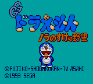
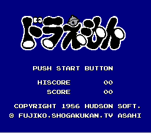

Doraemon Nara no Suke no YABOU (MG)

"Nara no Suke" is a name, and YABOU means "ambition." The name is a pun
on the popular game "Nobunaga's Ambition." This is why the second "no" is
smaller than the first. This is a Mario-style, horizontal-scrolling
platform game for the Sega Game Gear. I have heard of this anime but know
very little about it.
Doraemon (NESA)

The game has you running around avoiding enemies, but I don't know what
the purpose of the game is. You occasionally find doors that teleport you
to different parts of the playing field.
Return to Emulator Table of Contents
Last Modified 8 April 1997
Created 26 Sept 1996
Luis A. Cruz
cruzl@ccs.neu.edu